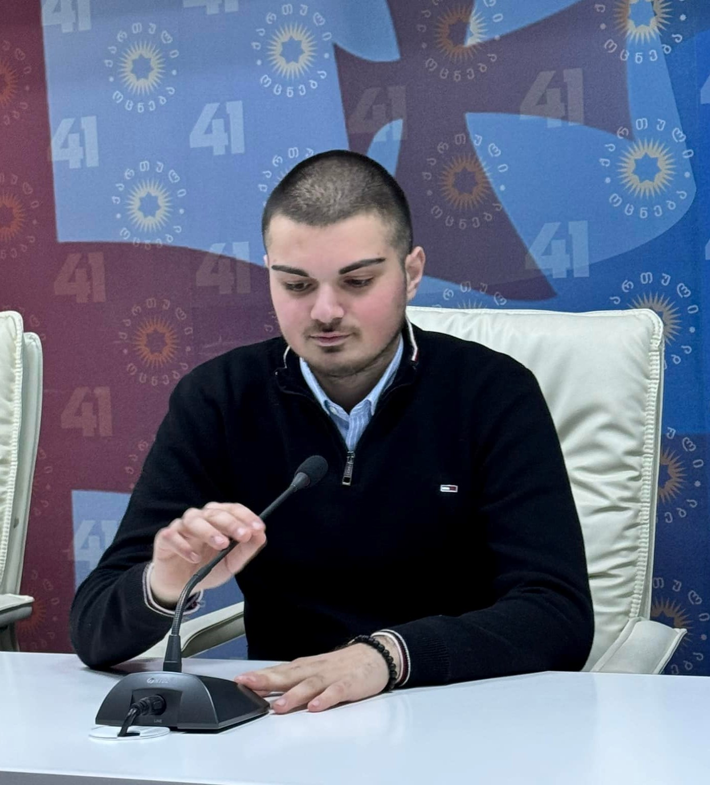
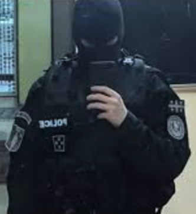
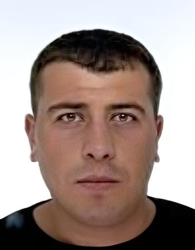
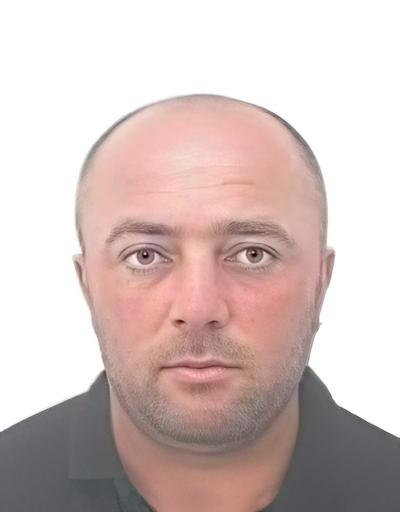
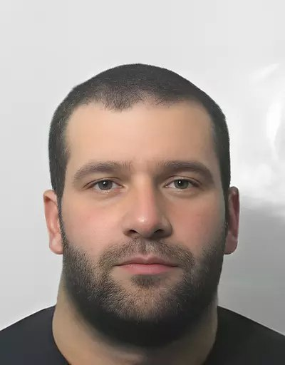
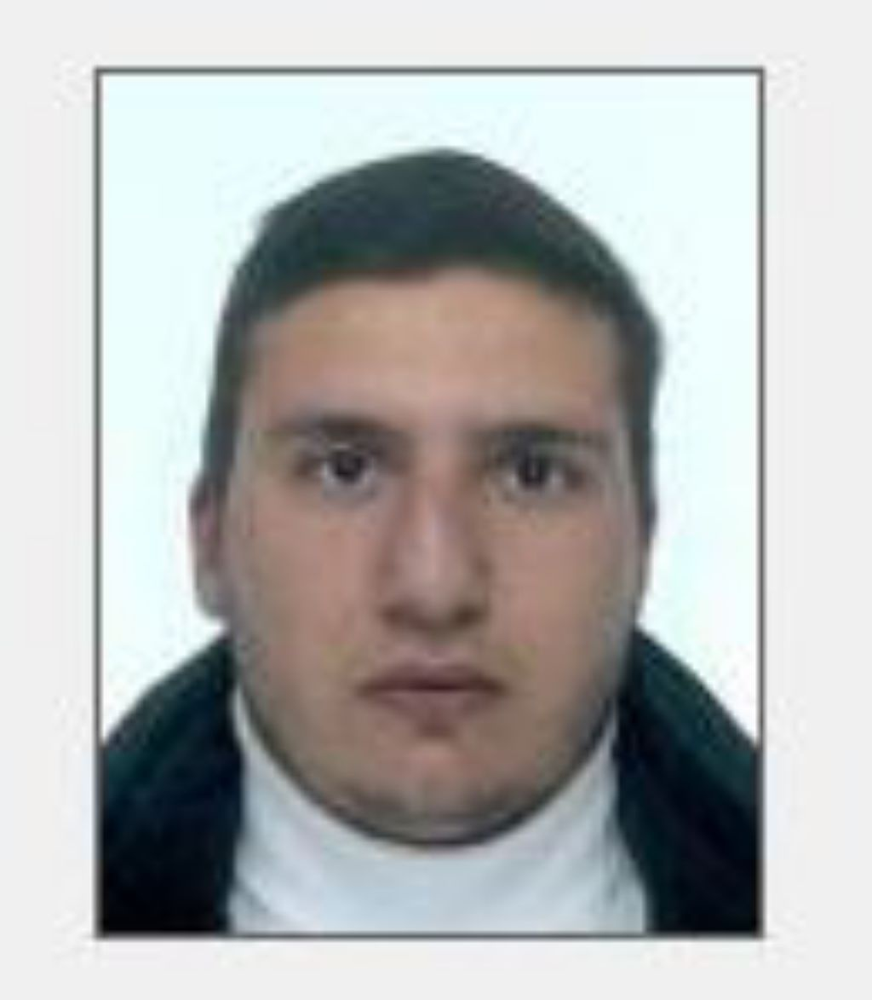
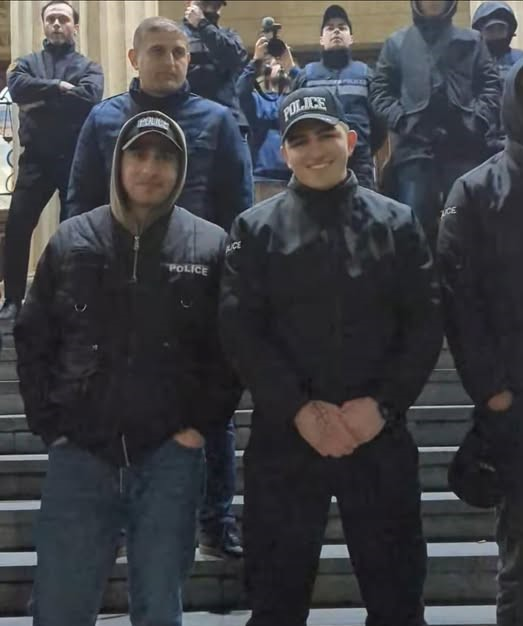
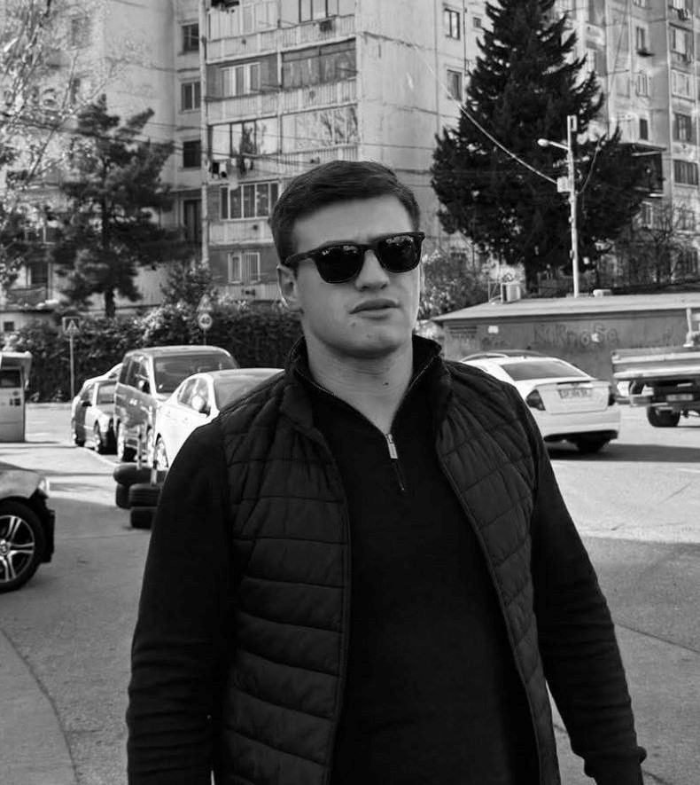
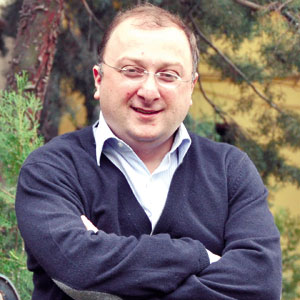

ქართული ოცნების მონები/ღორები
 ქეთევან ჯაჭვაძე(უსამართლო მოსამართლე)
ქეთევან ჯაჭვაძე(უსამართლო მოსამართლე) ირაკლი ხუსკივაძე(უსამართლო მოსამართლე)
ირაკლი ხუსკივაძე(უსამართლო მოსამართლე) თამარ მჭედლიშვილი(უსამართლო მოსამართლე)
თამარ მჭედლიშვილი(უსამართლო მოსამართლე) ვახტანგ გომელაური
ვახტანგ გომელაური ირაკლი ზარქუა
ირაკლი ზარქუავიქტორ სანიკიძე
- ნიკოლოზ მელიქიშვილი - ქართული ოცნების ახალგაზრდული ორგანიზაცია(ტიტუშკა)
- გიორგი კუსრაშვილი(სპეცრაზმი)
 ნათია ბერიძე(პოსტივი)
ნათია ბერიძე(პოსტივი) ზვიად ხარაზიშვილი(გდდ)
ზვიად ხარაზიშვილი(გდდ) ბექა ოდიშარია
ბექა ოდიშარია- ჯონდო ურიადმყოფელი
 დიმიტრი სამხარაძე - ხალხზე ძალადობდა და გამეტებით სცემდა
დიმიტრი სამხარაძე - ხალხზე ძალადობდა და გამეტებით სცემდა რამაზი მამაგულაშვილი
რამაზი მამაგულაშვილი- იოსებ გვარამაძე
 ლაშა ბერკაცაშვილი
ლაშა ბერკაცაშვილი- სოსო გელაშვილი
 დიმიტრი მჭედლიძე - სპეცრაზმელი რომელიც ქალებს იჭერდა და სცემდა
დიმიტრი მჭედლიძე - სპეცრაზმელი რომელიც ქალებს იჭერდა და სცემდა  ზურაბ ქობალია(უკანონოდ დაარბია მშვიდობიანი მოქალაქეები)
ზურაბ ქობალია(უკანონოდ დაარბია მშვიდობიანი მოქალაქეები) გოჩა კანკია(რობოკოპი)
გოჩა კანკია(რობოკოპი) უშანგი ბაგალიშვილი(რობოკოპ)
უშანგი ბაგალიშვილი(რობოკოპ) ლუკა რუსიშვილი(რობოკოპი)
ლუკა რუსიშვილი(რობოკოპი) იოსებ მთვარელიძე(რობოკოპი)
იოსებ მთვარელიძე(რობოკოპი) - ნიაზ ვარდოსანიძე(რობოკოპი)
 ლაშა ჭიქიაძე(გდდ)
ლაშა ჭიქიაძე(გდდ) გიორგი შაინიძე(შსს)
გიორგი შაინიძე(შსს)- ბექა კუხალაშვილი(მეორე უცნობია)
 გიორგი ოდიშვილი(რობოკოპი)
გიორგი ოდიშვილი(რობოკოპი)- შოთიკო პავლენაშვილი(ტიტუშკა)
- შალვა რამიშვილი(პოსტივი)
 ვარლამ წიკლაური(ტელეკომპანია იმედი)
ვარლამ წიკლაური(ტელეკომპანია იმედი) შაკო კუჭაშვილი(ტიტუშკა)
შაკო კუჭაშვილი(ტიტუშკა)